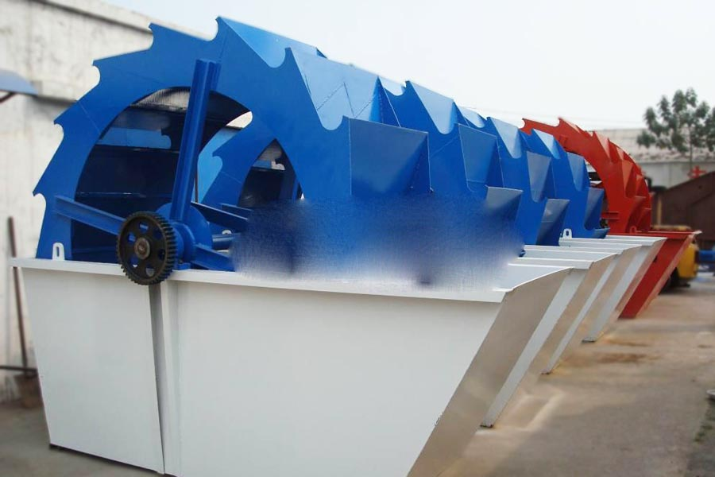
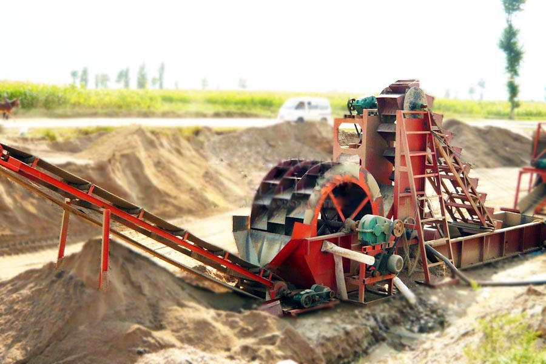

- Home >
- benefication plant >
- Wheel Sand Washing Machine

Construction waste crushing production line

Mobile construction waste crushing station for urban construction waste crushing.
Wheel Sand Washing Machine
Wheel Sand Washing Machine Introduction
XS Wheel Sand Washing Machine series to introduce the US KD’s advanced technology, combined with the actual situation of the domestic industry gravel equipment developed efficient sand washing equipment, it has a high cleaning, reasonable structure, large output, sand washing process, sand and less wastage Features. Especially its transmission parts are related to water, sand isolation, so the failure rate is much lower than the currently used yarn spiral washing machine, sand washing is the best choice for industry upgrading.

Wheel Sand Washing Machine technical parameters:
| Specification | XS2600 | XS3200 | XS3600 |
|
Bucket wheel diameter(mm)
|
2600 | 3200 | 3600 |
| Rotating speed | 0.8-1.2 | 0.8-1.2 | 0.8-1.2 |
| Processing capacity(t/h) | 20-80 | 240-300 | 280-400 |
| Back to the amount of sand(t/h) | 5-20 | 100-150 | 140-200 |
| Motor Power(KW) |
5.5
|
11 | 15 |
| weight (Kg) | 2400 | 11400 | 16720 |

Working principle
Round bucket type wash sand machine work Shi, motor through triangle with, and deceleration machine, and gear deceleration Hou led impeller slow turned, gravel has to material slot into wash slot in the, in impeller of led Xia roll, and each other grinding, removed cover gravel surface of impurities, while damage package covered sand grain of vapor layer, to conducive to dehydration; while added water, formed powerful flow, timely will impurities and the share small of foreign body away, and from spill export wash slot discharge, completed cleaning role. Clean the gravel by the blade away, and finally pour the sand from the rotation of the impeller outlet slots, complete the clean gravel.
Leave Me A Message, Now
If you have any questions regarding equipment prices, production line configuration or other problems, you can send a message to us, we will contact you soon.